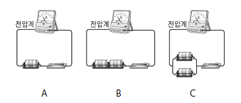
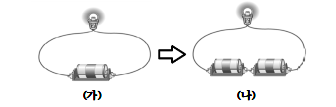
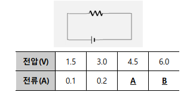

II. 전기와 자기
2. 전류 전압 저항
1.이동하는 전하
II. 전기와 자기
2. 전류 전압 저항
2. 전류를 조절하는 전압과 저항
II. 전기와 자기
2. 전류 전압 저항
3. 쓰임새에 맞는 저항의 연결
확인 문제
# 1
tips_and_updates 모두 같은 기구를 이용하여 구성한 A, B, C 세 회로에서 전압계의 값을 옳게 비교한 것은?

① A = B > C
② B > A = C
③ B > C > A
④ C > A = B
⑤ A = B = C
정답 : 2
해설 :전지의 직렬연결은 전압을 높여 전류가 세어진다.
출처 : 2021년 1학기 기말고사
# 2
tips_and_updates 여러 가지 물질 중에서 전기 저항이 가장 큰 물질에 해당되는 것은?
① 금
② 은
③ 구리
④ 고무
⑤ 알루미늄
정답 : 4
해설 : 여러 가지 물질 중 전기 저항이 가장 큰 물질은 고무이다.
출처 : 2021년 1학기 기말고사
# 3
tips_and_updates 그림에서 (가)를 (나)처럼 같은 전지를 두 개 연결하였을 때의 설명으로 옳은 것만을 ( 보 기 ) 에서 있는 대로 고른 것은?

( 보 기 )
ㄱ. 전구가 더 밝아진다.
ㄴ. 전류가 더 세게 흐른다.
ㄷ. 전구의 사용시간이 2배로 길어진다.
① ㄱ
② ㄴ
③ ㄱ,ㄴ
④ ㄴ,ㄷ
⑤ ㄱ,ㄴ,ㄷ
정답 : 3
해설 : 전지의 직렬연결은 전압과 전류가 커져서 전구가 더 밝아진다.
출처 : 2021년 1학기 기말고사
# 4
tips_and_updates 전기회로에 흐르는 전류에 대한 설명으로 옳지 않은 것은?
① 전류의 세기는 전구를 지나면 줄어든다.
② 전하를 운반하는 전자의 흐름을 전류라고 한다.
③ 전류의 세기는 저항을 이용하여 조절할 수 있다.
④ 전류는 전지의 (+)극 쪽에서 (-)극 쪽으로 흐른다.
⑤ 전지의 전압을 높이면 전류의 세기가 커진다.
정답 : 1
해설 : 회로에 흐르는 전류는 어느 점에서나 항상 같다.
출처 : 2021년 1학기 기말고사
# 5
tips_and_updates 어떤 니크롬선에 걸리는 전압을 변화시키면서 니크롬선에 흐르는 전류의 세기를 측정하였더니 다음 표와 같았다. A+B의 값으로 옳은 것은?

① 0.5
② 0.7
③ 1.0
④ 1.2
⑤ 1.4
정답 : 2
해설 : 전압과 전류는 비례한다.
출처 : 2021년 1학기 기말고사
# 6
tips_and_updates 그림은 전압이 20V인 전지에 10Ω인 저항을 연결한 회로를 나타낸 것이다. 물음에 답하시오.
(1) 이 회로에 흐르는 전류의 세기는 몇 A인가?
① 1A
② 2A
③ 3A
④ 4A
⑤ 5A
(2) 위 회로에서 전류의 값을 1/4배로 낮추고자 할 때 이용하는 방법으로 옳은 것만을 (보기)에서 있는 대로 고른 것은?
( 보 기 )
ㄱ. 같은 저항 2개를 병렬로 연결한다
ㄴ. 같은 저항 4개를 직렬로 연결한다.
ㄷ. 전압을 5V로 낮춘다.
① ㄱ
② ㄴ
③ ㄷ
④ ㄱ,ㄷ
⑤ ㄴ,ㄷ
정답 : (1) 2 , (2) 5
해설 : (1) 전압 = 전류 X 저항
(2) 회로에서 전류의 값을 1/4배로 낮추고자 할 때 저항이 4배로 커지면 된다.
출처 : 2021년 1학기 기말고사
# 7
tips_and_updates 전기회로의 전류계와 전압계의 눈금을 읽었더니, 전류의 세기는 0.2A, 전압은 5V였다. 이 회로에 연결된 저항 값으로 옳은 것은?
① 0.04Ω
② 1Ω
③ 4Ω
④ 5Ω
⑤ 25Ω
정답 : 5
해설 : 전압= 전류 X 저항
출처 : 2021년 1학기 기말고사
# 8
tips_and_updates 전기 저항에 대한 설명으로 옳은 것만을 (보기) 에서 있는 대로 고른 것은?
( 보 기 )
ㄱ. 물질의 종류에 관계없이 모두 같다.
ㄴ. 자유 전자가 이동하면서 서로 충돌하여 생긴 것이다.
ㄷ. 전기 저항은 전류의 흐름을 방해하는 정도를 나타낸다.
① ㄱ
② ㄴ
③ ㄷ
④ ㄱ,ㄷ
⑤ ㄱ,ㄴ,ㄷ
정답 : 3
해설 : 저항은 전자가 이동하면서 원자와 충돌하여 생긴 것이다.
출처 : 2021년 1학기 기말고사